Слава и опасности в проклятых историей землях
Мир, который приведён здесь – лишь один из многих, дрейфующих в пустоте Несотворённой Ночи. Для его жителей мир во многом остался таким же, каким был, покрытый шрамами Раскола, но сохраняющий солнечный свет, гравитацию, смену сезонов и все приличествующие миру элементы. И, тем не менее, любая образованная душа знает, что эта успокаивающая прочность рассыпается в прах на дальних границах, где голубое небо превращается в черноту и свет солнца пропадает в сгущающемся мраке.
Миры очень хрупки. Каждый из них – фрагмент былого мироздания, и каждый страдает от прогрессирующего упадка небесных механизмов. Яркие схемы неземного великолепия, некогда поддерживавшие законы природы, теперь сломаны, слишком многие из них разрушены божественными охотниками за артефактами, разбиты Сотворёнными Богами в их войне, или развалились без заботы ангелов.
В начале
Мудрецы и учёные мало в чём уверены относительно старого мира. Они соглашаются в том, что когда-то он был целым, давным-давно созданным далёким Единым, который жил среди ангелов на Небесах. У этих древних было много традиций и обычаев. Одним из чудес была великая тайна теургии. Обладание ею стало всепоглощающей целью для каждого государства. Пока искусство теургии расцветало по всему миру, с его помощью было создано бесчисленное количество замечательных чудес.
Однако этого было недостаточно. Народы мира начали ссориться по более утончённым вопросам. Со временем самые могущественные теурги былого мира согласились представить свой спор перед высшим судьёй. Они хотели взять стены Небес штурмом и найти Единого. Они смогли добиться успеха. Ангелы бежали в Ад, а теурги вошли в зал Единого. Там они и нашли пустой трон.
Нации земного мира внизу погрузились в хаос. Теурги посчитали, что если на Троне нет Бога, то человечество должно предоставить замену. Они проникли глубоко в небесные залы, вскрывая странные механизмы для создания големов-богов. Повреждения, которые они нанесли, вызвали опустошение в мире внизу. Разные нации создали разные формы Сотворённых Богов. Эти существа взяли Небеса штурмом, отталкивая ангелов и воюя друг с другом. Вызванный войнами хаос и осквернение небесных механизмов дали свой эффект. Сияющие залы Небес начали раскалываться, а их осколки – уплывать в Несотворённую Ночь.
Внизу эхом урона, причинённого наверху, стал Раскол. Мироздание стало раскалываться на куски, и каждый «мир» уплывал в Несотворённую Ночь. Тысячу лет миры боролись за выживание. Но есть в мирах и кое-что новое. Высохшие трупы Сотворённых Богов распадаются. Связанная с божественными големами сила освобождается и падает на миры внизу. Странная алхимия очистила эту силу так, как её создатели и не представляли. Слова Творения, некогда используемые Сотворёнными Богами, теперь наследуются смертными мужчинами и женщинами. Это – Обожествлённые.
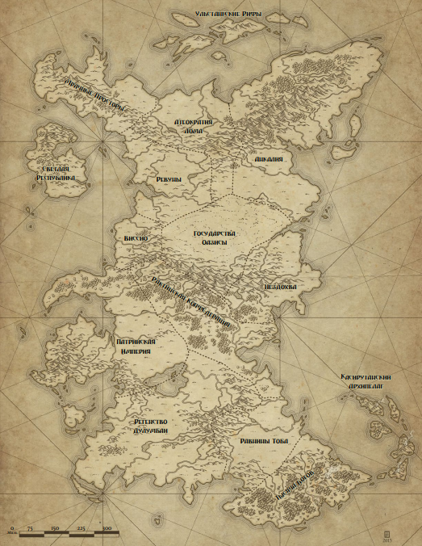
Вселенная разделена на четыре великие части: Небеса, миры, Ад и Несотворённая Ночь, которая их окружает. Для живых путешествовать между этими сферами непросто; единственным распространённым способом являются Ночные Дороги, прорывающиеся в изолированных уголках миров. Путешествие по таким дорогам – занятие для героев и безумцев, ибо странные паразиты и эффекты Несотворённой Ночи могут превратить этот узкий путь в коридор смерти для неподготовленных.
Обходя всё сущее, найдёшь всё несуществующее. Бездонная, бесформенная, лишённая света в своих глубинах, Несотворённая Ночь – это изначальный хаос, из которого всё произошло. Мудрецы описывают её как бесконечную непроницаемую пустоту, в которой само понятие света и значения не имеют силы. Упасть в неё – значит вечно дрейфовать, возможно, мёртвым, возможно, хуже, чем мёртвым.
Но, несмотря на пустоту, из её тьмы появляются существа. Несотворённые похожи на живых созданий, но какие-то неправильные. Это искривлённые прото-существа, живые осколки, извергнутые Ночью. Мудрецы предполагают, что они – продукт «трения» между сотворённым миром и Несотворённой Ночью, живые точки напряжения, появляющиеся из-за взаимодействия между существованиями. Для обоих миров они – уроды, их действиями, похоже, частично управляют страдания, частично – голод, а частично – простая ненависть. Подавляющее их большинство смертельно опасно для героев, и даже те, кто не проявляет откровенной враждебности, могут оказывать разрушающее действие на рассудок окружающих.
Единственный способ пересечь Несотворённую Ночь – через Ночные Дороги. Эти узкие пути напоминают титанические арки, которые пересекают окружающую их тьму. Некоторые из них выглядят как каменные мосты, другие – как ленты потускневшего металла или чёрные реки, текущие без дна и берегов. Ночные Дороги предстают во множестве обличий, и мудрецы спорят об их создателях. Кто-то утверждает, что их построили ангелы на заре творения, другие указывают на Единого, а кое-то говорит, что их создали древние теурги, чтобы соединить миры после Раскола. Некоторые дороги, похоже, появились из самой Несотворённой Ночи, и созданы из безумного смешения сущностей миров, которые они соединяют.
Ночные Дороги опасны. Многие построены с дорожными станциями и цитаделями вдоль пути, большинство из которых пусты, но в некоторых продолжает теплиться какая-то жизнь. Эти оазисы безопасности в бесконечной тьме иногда служат убежищем для потомков исследователей или беженцев, оказавшихся в ловушке на дороге столетия назад, и редко в подобных анклавах рады чужакам. В дополнение к этой опасности, путь зачастую кишит Несотворёнными, что делает путешествие по дороге подвигом, достойным героической доблести. Хотя если дорогу очистить, она обычно останется чистой, пока какая-то сила сможет предотвращать неизбежные вторжения Несотворённых.
Входы в такие дороги обычно «прорываются» в изолированных, отдалённых местах. Как будто дорога – это игла, и лишь в заброшенных местах «кожа» достаточно тонка, чтобы её можно было проткнуть. Однако в особенно хрупких мирах дорога может прорваться и посреди оживлённой столицы или в каком-то другом неудобном месте. Большинство дорог вскоре превращают своё окружение в какую-то неземную чудовищную сцену, и внезапное присутствие невозможного окружения или странных магических предметов является отличительным признаком скрытых дорог. Авантюристы, погружающиеся в глубины древних руин, знают о необходимости опасаться конструкций, которые с увеличением глубины становятся более странными.
После того, как дорога пробилась в мир, она, как правило, остаётся соединённой, пока её не освободит какая-нибудь огромная теургическая сила. Большинство дорог соединяет только две точки, хотя существуют и такие магистрали, в которых многочисленные ответвления соединяют множество миров и мест. Войти в Ночную Дорогу иногда очень просто – достаточно зайти в правильную дверь, а иногда для этого необходимо исполнить особый магический ритуал в определённом месте в правильное время. Чтобы покинуть её, достаточно просто пройти сквозь выход в конце дороги. Конечно, обитатели пространства между входом и выходом часто не желают разрешать проход, иногда запрашивая странные пошлины, а иногда препятствуя путешественникам силой.
Наихудшим эффектом Ночных Дорог являются неизбежно изрыгаемые ими Несотворённые паразиты. Лишающие рассудка чудовища могут внезапно вырваться из тёмного угла мира, пожирая население, пока какая-нибудь группа отважных героев не загонит их обратно и не запечатает вход в Ночную Дорогу могущественной магией. Обычным колдовством полностью уничтожить Ночную Дорогу невозможно. Однако некоторые могучие теургические призывы могут повредить или разбить дорогу, и огромная мощь Обожествлённых может сделать то же самое, если найти и сокрушить чувствительные точки конструкции. Конечно же, сделать подобное без какого-то быстрого способа побега – значит обречь себя на бесконечное, дрейфующее изгнание во тьме Несотворённой Ночи.
Часто Ночная Дорога соединяет мёртвый мир с живым. Такие разрушенные миры гибнут по многим причинам: жуткие войны, страшное оружие, чудовищные эпидемии или катастрофический отказ законов природы, вызванный повреждениями небесных механизмов, которые его поддерживали. В некоторых отсутствуют даже солнечный свет и воздух, в то время как другие представляют из себя серые миры-гробницы с гниющими городами и полями – кладбищами для павших.
В таких мирах-трупах можно найти сказочные сокровища, но вместе с сокровищами и ужасы, разрушившие эти миры. Неупокоенные являются обычной угрозой, не говоря о Несотворённых, пробирающихся туда сквозь истончающуюся кожу мира. В других мирах остаётся тонкая прослойка обитателей, выживающих за счёт поглощения последних остатков средств существования, а иногда и друг друга. Законы природы также могут оказаться предательскими, когда звуки внезапно превращаются в зазубренные клинки, заполняющие воздух, или гравитация переворачивается с садизмом кошки. Некоторые миры буквально распадаются, когда поддерживающие их небесные механизмы сдаются на волю упадка.
В мёртвых мирах нет какой-то разумной надежды. Какие бы усилия ни предпринимали их обитатели, чтобы избежать гибели, они потерпели неудачу, и всё, что осталось – ждать неизбежной финальной тишины. Однако для Обожествлённых героев всё может сложиться по-другому. Возможно, им удастся добраться до расколотого зала Небес, в котором находятся небесные механизмы этого мира, и починить отказывающие устройства, или отогнать силы, вмешивающиеся в их работу. Даже действия в самом мире могут воскресить умирающую экосистему или снова зажечь угасшее солнце. Подобные деяния будут титаническим трудом даже для божества, но если за дело берутся Обожествлённые – надежда ещё не потеряна.
Небеса – это разрушенный дом. Как и мир, они были разорваны на части Расколом, либо из-за насилия Сотворённых Богов и их борьбы, либо повреждений, нанесённых небесным механизмам. Теперь их фрагменты плывут в Несотворённой Ночи: здесь зал, там – коридор, а чуть дальше – сияющий парк. Осколки часто соединяются скрытыми Ночными Дорогами, некоторые из которых спрятаны так хорошо, что вход в них можно найти, только если точно знать, где он расположен. Другие осколки плавают свободно, и лишь могущественная теургия может переместить в них чужаков из соединённых с ними земных миров.
Залы Небес выглядят по-разному, но обычно величественно и драматично. Высокие стены из белого как облака камня, арки из пылающего стекла, парки с идеальными деревьями, посаженными в мифически важном узоре, которые переливаются музыкой, когда сладкий ветер колышет их листья… у всякого великолепия есть дом на Небесах. И, тем не менее, эти чудеса обычно покрыты трещинами, ржавчиной и осквернены насилием, некогда бушевавшим в небесных залах. Множество немыслимо красивых творений были разбиты яростью Сотворённых Богов или ангелов, а многое из того, что сохранилось, было превращено в нечто меньшее или опасное.
В некоторых осколках сохраняется экосистема, обычно с помощью магических источников еды и воды, или небесного механизма, поддерживающего жизнь в пределах зоны. В некоторых из этих убежищ до сих пор есть обитатели, будь то обезумевшие ангелы, попавшие в ловушку жрецы Сотворённого Бога, некогда жившего здесь, или незадачливый теург и его свита. Со времён раскола Небес в мире минула тысяча лет, но когда и механизмы времени повреждены, любое место может погрузиться в странное безвременье. Иные беженцы – просто потомки изначальных чужаков, странно изменившиеся за прошедшие века изоляции.
На Небесах также есть врождённые опасности. В некоторых осколках установлены ловушки, капканы, оставленные каким-нибудь Сотворённым Богом в былую эпоху, чтобы уничтожить незваных гостей или защитить что-то ценное. Другие «ловушки» – лишь неудачные последствия угасания самого осколка, различные места которого становятся опасными, а магия прокисает и превращается в угрозу. Сами небесные механизмы особенно опасны: их экзотический вид и странные способности заманивают легкомысленных во внезапное уничтожение силами за пределами понимания.
Каждый кусок Небес изначально был соединён с частью мира. Это духовная связь, а не физический мост, поскольку именно небесные механизмы данного осколка поддерживают существование мира и его законы природы. Если механизмы остановить или разобрать, соединённая с осколком часть мира исчезнет в Несотворённой Ночи. Многие осколки Небес уже потеряли соединённые с ними миры из-за иных катастроф, и теперь являют собой богатую добычу для мародёров, предпочитающих не вызывать космические катаклизмы в неизвестных землях. Конечно, из-за отсутствия соединённых миров до таких осколков сложнее всего добраться.
Многие разграбляли механизмы Небес со времён сотворения мироздания. Сотворённые Боги разбирали их ради бесценных компонентов, чтобы увеличить собственную силу. Теурги крали их осколки, чтобы напитать свою магию новым могуществом. Диверсанты разбивали их, чтобы вызвать катастрофы на регулируемых ими землях, а ангелы хотели разрушить их из-за желания уничтожить предавший небесное воинство мир. Если бы не огромная прочность механизмов, они бы все уже давно развалились.
Лишь величайшие герои рискуют искать павшие залы Небес. Найти Ночную Дорогу до осколка, расчистить путь и исследовать ветшающие залы – подвиг для внушающих трепет смертных героев… или решительного молодого Обожествлённого.
Ад – это убежище для изгнанников с Небес, пылающий пузырь ужасных механизмов и безымянных мук, управляемый озлобленными ангелами и предназначенный для вечного заключения душ умерших смертных. Его изначальная цель как места очищения и вознесения была искажена извращением его механизмов, и теперь у попавшей в его пасть души нет надежды вырваться.
Изначальный хранитель Ада, архангел Самаэль, был изгнан бежавшими с Небес. Вместе со своими оставшимися сторонниками он прячется в лабиринтах Ада, помогая тем, кто приходит освободить души или противостоять новым хозяевам этого места. Хотя его любовь к человечеству весьма сдержана, ярость от извращения его бывших владений и осквернения священного предназначения делают его лучшим союзником Обожествлённых среди адского пламени.
До Ада можно добраться двумя способами: либо через скрытые Ночные Дороги в местах забытых мучений, либо просто умерев без получения вскоре после этого действенных погребальных обрядов. Душа, которая не прикована надёжно ко сну смерти или не укрыта в Раю своего Обожествлённого покровителя, неизбежно попадёт в Ад, где её поджидают бесконечные страдания.
Лишь некоторые религии обладают необходимыми ритуалами, чтобы приковать души ко сну в её собственном мире. Единая вера, присутствующая во многих землях, эффективна в этом вопросе, как и поклонение предкам, практикуемое народом Рен этого мира. В других государствах есть свои традиционные и действенные способы, хотя не все они работают так хорошо, как обещают.
Проникнуть в Ад нетрудно, поскольку лишь немногие входы в Ночные Дороги известны и охраняются его обитателями. Однако покинуть его – гораздо более сложное предприятие, особенно если герои хотят сбежать со спасённой душой.
По Несотворённой Ночи разбросаны маленькие миры-убежища. Эти Раи были созданы Сотворёнными Богами или древними силами Былых Империй, как престолы и свидетельства их славы. Каждый из них был построен по образу своего создателя, чтобы быть цитаделью и обиталищем для бога и душ его верных последователей.
В момент смерти души таких верующих перемещаются в безопасность Рая своего бога вместо того, чтобы оказаться в Аду. Там они могут вечно существовать в блаженстве и спокойствии, охваченные счастьем своего нового дома. Страдания затихнут, боль от потерь успокоится, и бог будет купаться в восхвалениях и неге своего возлюбленного народа.
Конечно, детали этих раёв разнятся от бога к богу, а некоторые из них воплощают идеалы, которые показались бы чудовищными для глаз неверующих. Тем не менее, их предназначение – быть убежищем, и они остаются убежищем. Хотя смерть или исчезновение их хозяев не позволяет новым душам попадать в Рай, изначальные верующие остаются в них, по-прежнему защищённые силой этого мира и его врождёнными чудесами. Среди них – давно потерянные для иных миров мудрецы и те, кому известны забытые секреты.
Иногда такой Рай может испортиться в отсутствие своего создателя. Без его направляющей мудрости и могущества, они могут пасть жертвой вторжения Несотворённых, или быть расколоты противостоянием между душами. Некоторые полностью разрушаются войной или поглощаются вторгнувшейся Ночью. Поскольку зачастую в Раю невозможны смерть и страдания, результаты таких катастроф могут быть в равной степени странными и ужасающими.
Уроженцы этого мира чаще всего называют его «Аркем», по старому патрийскому слову, обозначающему убежище. Для большинства местных прошлое – лишь философское сожаление; они слишком заняты выживанием. Однако ситуация в Аркеме меняется, и меняется не к лучшему. Каждый год всё больше чудовищ выбирается из теней, происходят необъяснимые магические бедствия. Небесные механизмы изнашиваются, и если они откажут, Аркем падёт вместе с ними.
На карте основного континента расположены пятнадцать основных государств. Путешествия долиго за океа пределы приводят к тому что грань между Несотворённой Ночи и миром все меньше,пока групаа не упадет в Несотворённую Ночь на корм Несотворённым. Аркем начал сталкиваться с Обожествлёнными только в последние несколько лет. Если игроки решат вмешаться в политику, ни одно государство не устоит перед согласованным вниманием пантеона опытных Обожествлённых.
Ниже приведены подробные описания всех государств мира. Каждое из них обладает уникальной историей, культурой и проблемами.
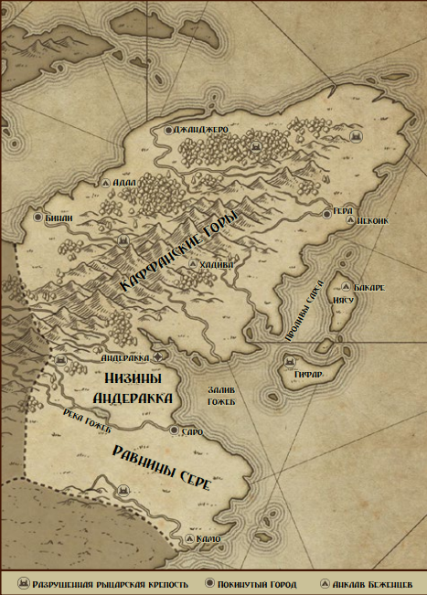
Королевство, рухнувшее после катастрофического вторжения из иного мира
Лишь пять лет тому назад Анкалия была маяком мирного процветания. Под мудрым руководством Верховного Негуса Арада, Избранного Богом, Анкалия была зелёной страной с процветающими городами, богатыми полями и людьми, благодарными Единому за благополучие. Возможно, такой мир вызывал трения между наследными жан-церарами сельской местности и назначенными королём кантибами больших городов, но странствующие юстициарии семи великих рыцарских орденов стремительно разрешали подобные затруднения своей мудростью и своими клинками.
Пять лет назад всему этому пришёл конец. Из-за какого-то непостижимого отказа небесных механизмов девять ужасных Ночных Дорог прорвались по всей стране. Орды чудовищных Несотворённых обрушились на Анкалию, а Опустошающая Чума подняла каждый труп рыщущим остовом. Некоторые города были вырезаны за несколько дней, в то время как у других было время на эвакуацию, пока рыцарские ордена сдерживали напор врагов. Потери были чудовищны, и древние ордена были практически уничтожены в результате этой жертвы.
Выжившие люди Анкалии отступили в прибрежные анклавы и немногочисленные убежища в глубине страны, где чудовища не могут легко до них добраться. Многие хотят вовсе бежать из Анкалии, но соседи им не рады. Люди говорят, что Верховный Негус, должно быть, занимался какой-то запретной теургией или пользовался опасными реликвиями, что и привело к катастрофе. Простой люд опасается, что анкалийцы принесут эту беду с собой, в то время как мудрецы едва могут заставить себя подумать о том, что подобный чудовищный крах может случайно постигнуть и их государство.
Пока что выжившие мужчины и женщины Анкалии находят пристанище в руках бесчисленного количества мелких военачальников, выживших чиновников и отчаянных пиратов. Некоторые из этих хозяев – самоотверженные защитники простого народа. Гораздо больше – отчаянные мужчины и женщины, готовые пойти на всё, чтобы купить ещё один месяц жизни для своего сообщества, чего бы это ни стоило другим. Некоторые – не более чем короли бандитов, грабящие других выживших. Все они боятся разрушенных городов Анкалии и существ, по-прежнему обитающих там, но иногда нужда в том, что содержится внутри, перевешивает смертельный ужас.
Знаменитые рыцари Анкалии почти вымерли, но несколько странствующих клинков по-прежнему путешествуют по земле. Большинство выживших следуют древним законам своих орденов, принципам отваги, чести, благочестия и преданности правосудию. За пределами этих принципов каждый орден посвятил себя разному набору добродетелей, будь то сострадание лекаря Ордена Сурцессантов или непоколебимая защита простого народа, ценимая павийцами. Каждый посвящённый рыцарь по-прежнему обладает теоретическим правом вершить правосудие над любым человеком, стоящим ниже королевской семьи, но пользоваться таким правом в эти горькие дни непросто.
Анкалийцы – темнокожий народ, из той же акехской породы, что и патрийцы или предки виссиан. Хотя раньше это были миролюбивые люди, ценящие утончённую архитектуру, вдумчивое обучение и благочестивое почитание Единого, последние годы убили большинство из тех, кто не был способен на сложные решения ради сохранения своей жизни. Многие по-прежнему стараются поддерживать здравомыслящее, упорядоченное сообщество, в котором когда-то жили, но ужасные опасности диких земель и голод в их домах иногда приводят к мрачным деяниям.
Население: неизвестно, ранее около 4 млн.
Правительство: полевые командиры и выжившие чиновники.
Проблемы: земли кишат монстрами; иноземные авантюристы грабят руины.
Имена: мужские: Давит, Яред, Амануэль; женские: Редит, Винта, Самира; фамилии: Тиволде, Сенаи, Зережи.
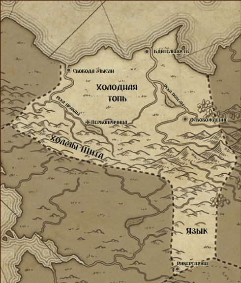
Земля, отравленная Расколом, которой правят грозные священники Истинного Разума
Лом – земля мрачных выживших. Их предки были беженцами, пережившими ужасную техно-теократию, некогда правившую Мрачными Просторами на востоке, рабами холодных искусственных богов, сбежавшими от своих хозяев и поселившимися в болотах и лесах, которые теперь называются Ломом. Их страдания были неописуемы, и их потомки поклялись в вечной вражде против всех богов и вестников божественности. Лишь человеческий разум должен стать мерой справедливости и правосудия.
Лом управляется атеократией, духовенством Истинного Разума, которое отвергает идею истинной божественности. Сотворённые Боги, паразитные божества и даже сам Единый – не более чем загадки недостаточно понятой магии или механические чудовища, враги человечества, недостойные почитания. Доверять можно только Истинному Разуму, который открыт пониманию Атеократа. Естественно, лишь антижрецы Лома могут надёжно интерпретировать веления Истинного Разума людям.
Лом – серая, несчастная земля под властью антижрецов, её города и деревни подчиняются непредсказуемым законам и улучшениям, придуманным иерархами. Произвольное количество простолюдинов небрежно приносится в жертву ради исследования новых культурных порядков и новых организаций общества, их ценность признаётся лишь в качестве подходящих объектов для экспериментов, во благо Истинного Разума и грядущего золотого века человеческих законов. Века, который не приблизился заметно даже после столетий горьких жертвоприношений.
Антижрецы черпают свою силу из Костра, древнего ангельского артефакта, добытого первым Атеократом. Некоторые из антижрецов много лет тщательно готовятся, прежде чем войти в Костёр; большинство выходит из него с выжженным небесными энергиями рассудком, но некоторым удаётся сохранить разум нетронутым. И идиоты, и неповреждённые получают невероятные способности сведения на нет и подавления магии, дары, которые могут погасить даже силы Обожествлённых. Слабоумных жертв тренируют использовать свои способности по команде дрессировщика, как собак, в то время как сохранившие рассудок могут рассчитывать на продвижение в Святую Конференцию, которая правит страной.
Втайне от всех, кроме самых высокопоставленных участников Конференции, Лом взращивается ангельскими существами. Эти жестокие повелители дают Атеократу доступ к тайнам и древним реликвиям в обмен на его усилия уничтожить религию во всем мире. Без укрывающих сил эффективных погребальных обрядов души умерших гарантированно попадают в когти Ада, так что чем меньше остаётся религий – тем лучше для ангелов. Тем, кто знает правду, обещано блаженное место в пламени в обмен на сотрудничество. К тому времени, как они поднимаются до такой должности, немногие сохраняют решимость сопротивляться посулам ангелов.
Появление Обожествлённых стало источником крайнего беспокойства для Атеократа и Святой Конференции. Охотничьи команды из слабоумных антижрецов и их безжалостных поводырей были разосланы по миру, чтобы найти этих смутьянов и разобраться с ними. Их успехи пока что весьма скромны, но каждая встреча даёт антижрецам больше опыта в обращении с дарами Обожествлённых.
В пределах Лома чужаков очень мало. Торговцев принимают как необходимое зло, но иностранцы, собирающиеся поселиться в Ломе, должны принять обычаи народа и оставить свои прошлые верования. Те, кто пытается подстрекать людей к поклонению богам, быстро находят ужасную смерть, хотя многие из угнетённых масс так отчаянно желают лучшей жизни, что готовы предложить своё поклонение любому существу, предлагающему помощь, не важно, насколько оно может быть отвратительным.
Население: 4 млн, из них 70 тыс. антижрецов.
Проблемы: антижрецы обращаются с народом как с расходным материалом; Костёр хотят украсть; ангельские покровители готовы пожертвовать государством.
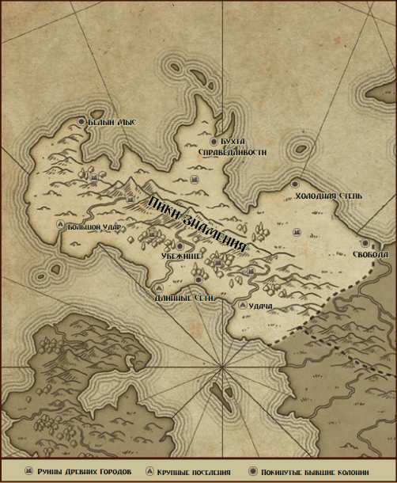
Опустошённая страна изгнанников
В некоторых частях мира хаос Раскола был хуже, чем в остальных, и Мрачные Просторы оказались одним из таких несчастливых регионов. Города некогда изысканной культуры, родственной современной Светлой Республике, были разрушены землетрясениями, а народ уничтожен волнами небесных испарений и смертельным кармическим дисбалансом. Века после этого землю считали проклятой, обрекающей на смерть любого, кто достаточно глуп, чтобы зайти в её неровные холмы и погружённые в задумчивость леса.
В таких обстоятельствах она стала идеальной целью для изгнанников и мятежников всех мастей. Сообщества и группы заговорщиков, лишённые своей старой жизни, искали новый дом в единственной земле, которая готова была их принять, в пустых полях Мрачных Просторов. Почва была достаточно плодородной, чтобы прокормить их, но жуткие звери холмов и последствия ужасных нарушений небесного равновесия по-прежнему делали её гораздо более опасной, чем предпочёл бы любой обычный поселенец. Большинство городов представляют собой не более, чем полуразвалившиеся селения на побережье, где нечастные визиты торговцев из Касирутана или Виссио помогают жителям обменять необходимые вещи на сушёную рыбу и добытый из руин утиль.
Изоляция и уединение этих земель сделало их любимым убежищем групп, нежелательных в других странах. Среди семей, проигравших в местных политических интригах, и религиозных энтузиастов, изгнанных из своих старых обществ, скрываются круги с более тёмными намерениями, экспериментаторы и колдуны, ищущие спокойного уединения. В этих хаотичных землях особенно легко возникают паразитные боги, и просторы в глубине страны испещрены тёмными храмами, в которых обитают эти отчаявшиеся божественные наркоманы и их испуганные приспешники. Древние руины манят сокровищами, и всегда находятся безрассудные группы авантюристов, готовые добыть потерянные ценности и действующие реликвии из павших городов.
Некоторые решительные души хотят основать свои небольшие королевства на Мрачных Просторах. Такие честолюбивые короли и королевы в итоге редко правят чем-то более впечатляющим, чем небольшая прибрежная деревушка нервных беженцев и изгнанников, но у некоторых хватает харизмы и связей, чтобы предпринять серьёзные попытки колонизации внутренних территорий. Такие попытки обычно бывают успешны некоторое время, иногда создавая основательные карликовые государства, пока чудовищные противники, безумные паразитные боги или просто необъяснимые неудачи наконец не разрушают их. Эти повторяющиеся провалы отбивают желание у других государств искать себе новые территории на полуострове.
Те немногие люди, кто называет Мрачные Пределы своим домом, несгибаемые и осторожные, искушённые в вопросах выживания и обладающие предсказуемым энтузиазмом по отношению к ритуалам удачи и талисманам всех мастей. Большинство местных живёт непростой жизнью, добывая посевы с полей или рыбу из моря, и множество сообществ вполне готовы заключить сделку с паразитным богом или ещё более зловещими существами, чтобы облегчить свою ношу. Некоторые уверены, что их особые защитники – это всё, что стоит между ними и несчастьями полуострова. Это убеждение приводит некоторые сообщества к ужасным жертвоприношениям и мрачным ритуалам, обычно скрываемым от чужаков.
Местные сообщества безжалостно прагматичны в своих обычаях и законах. Жителей практически не волнует, чем занимаются незнакомцы сами по себе или с чужаками, если они могут надёжно поддерживать сообщество и помогать соседям. Даже самые порочные и низменные могут найти свой дом в деревне Просторов, если сумеют ограничить свою злобу бесполезными незнакомцами или обитателями соперничающей деревни. Некоторые городишки тихо поддерживают таких мужчин и женщин, используя их как оружие против мириад опасностей Просторов.
Население: около 250 000 на побережье, неизвестно в глубине.
Проблемы: постоянное появление паразитных богов; разрушение древних сдерживающих структур; убежище для порочных личностей.
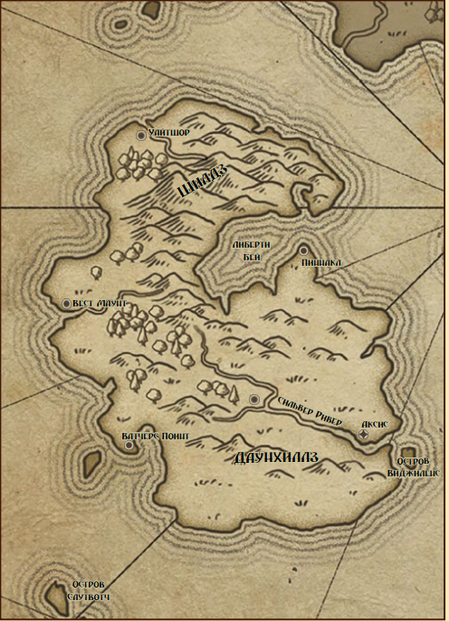
Последний бастион передовой науки
Островное государство, известное как Светлая Республика, является аномалией в Аркеме. Она единственная из всех государств-наследников сумела сохранить сложные технологические ресурсы после Раскола. Ревностно охраняемые эфирные электрические узлы распределяют питание республиканским устройствам и индустрии, одновременно поддерживая небесные механизмы, которые позволяют таким устройствам функционировать. Без влияния этих узлов размером с дом, магнитные ружья, электрические автомобили и продвинутые телекоммуникационные приспособления представляют собой не больше, чем мусор.
Большинство технологий Республики находятся примерно наравне со странами первого мира современной Земли, но с заменой внутреннего сгорания магнитными и электрическими силами. Некоторые прототипы способны на гораздо большее, хотя они обычно требуют специального магического обслуживания и не могут производиться массово. Некоторые предметы даже зачарованы так, чтобы функционировать вне острова, хотя такие образцы чудовищно дороги и доступны лишь богатым элитам.
Местные жители Светлой Республики прекрасно понимают пределы своих пятидесяти с небольшим эфирных узлов. Иммиграция безжалостно ограничена богатыми и теми, кто обладает хорошими связями, хотя криминальные организации иногда переправляют людей через береговые станции наблюдения за космические суммы. Большинство иностранцев жаждет попасть туда, поскольку даже беднейшие граждане Республики наслаждаются жизнью наравне с той, которую ведут современные обитатели стран первого мира, с продвинутой канализацией, действенной фармацевтикой, дешёвым телевидением и покрывающей остров компьютерной сетью.
К несчастью, эфирные узлы изнашиваются. Значительная часть огромной промышленной базы республики посвящена производству быстро расходуемых запасных частей для узлов, потребность в которых только возрастает. Огромное количество прецизионно выполненных запчастей и товаров продаётся иноземным торговцам в обмен на жизненно важное сырьё, которое невозможно найти на острове, но всё большая часть этой прибыли тратится лишь на поддержание работоспособности узлов. Республиканские теотехники не могут заменить эти узлы, если они выйдут из строя или будут разрушены в ходе диверсии.
Правительство Республики не соответствует сложившейся ситуации. Нынешний президент – всего лишь марионетка в руках бюрократов, а различные министерства в правительстве борются за контроль над несколькими региональными советниками, избираемыми в Верховный Совет острова. Каждый заботится о том, чтобы получить больше влияния и могущества, и в тени этого конфликта несколько влиятельных криминальных организаций и деловых концернов пытаются получить выгоду. За красивым фасадом республиканской демократии и добросовестного исполнения гражданского долга может быть куплено или разрешено практически что угодно, если заплатить правильным функционерам. Все негласно понимают, что старшие бюрократы стоят выше закона, если только не сумеют разозлить достаточное количество своих коллег.
Народ лишь смутно осознаёт опасность, в которой находится, и от опасений по поводу узлов отмахиваются как от вздора. Большинство граждан, в основном, заботит новая машина, новое телешоу, новый танцевальный клуб или новая возможность заработать. Те, кто знает правду, делятся на идеалистов-защитников государства и на безжалостных людей, желающих лишь получить прибыль из грядущей катастрофы. Некоторые даже надеются, что Обожествлённые спасут их от неизбежного краха.
Население: 12 млн.
Проблемы: износ узлов; коррупция; зависть соседей к богатству.
Далёкие земли, плывущие в Несотворённой Ночи
Ночь, окружающая мир, является тайной и источником ужаса для обычных моряков. Все знают, что корабль, который достаточно беспечен, чтобы отойти слишком далеко от берега, неизбежно будет потерян во тьме Ночи, обречён на безымянную смерть в чёрных водах. Но кое-кто утверждает, что сквозь Ночь существуют тайные пути и скрытые маршруты, по которым может пройти осторожный капитан.
Края за пределами Ночи называют «Далёкими Землями». Постоянная связь с ними отсутствует. Самое большее, что встречается – это один или два корабля из какого-нибудь потерянного флота, странно снаряжённые судна из дальних краёв. Тем не менее, за последнюю тысячу лет сквозь завесу пробралось достаточное количество иноземцев, несущих с собой странные и противоречивые рассказы о том, что может лежать за пределами.
Некоторые из этих иноземцев даже не люди. Человекоподобные звери, конструкты из бронзы и стекла и существа, лишь внешне напоминающие человека, прибывали из Далёких Земель. Столь странные создания редко находят для себя спокойное место в мире, но в этих землях достаточно своих чудес, чтобы иноземная диковина не выглядела совсем уж невыносимой. Тот, кто долго выживает в этом мире, обычно обладает каким-то особым даром, делающим его ценным прислужником.
Немногим удаётся вернуться к себе домой. Никто из местных моряков даже и не мечтает пересечь окружающую Ночь, а колдуны и безумцы, ищущие дальних путешествий, имеют на примете свои места назначения. Многим из этих изгоев ничего не остаётся, как вечно тосковать по потерянному миру, хотя некоторые принимают жуткую смерть в напрасных попытках вернуться в родные края. Те, кто задерживается, иногда приносят с собой странные новые искусства или колдовство, зачастую с разрушительными последствиями.
Использование Далёких Земель
Далёкие Земли предназначены для того, чтобы быть вместилищем персонажей или существ, не имеющих очевидного места происхождения в остальном мире. Ведущий может решить использовать другой фэнтези-сеттинг в качестве Далёких Земель, импортируя персонажей из дальних миров, готовых испытать на себе эти новые переполненные божествами территории. Другой может позволить игроку, у которого есть идея неподходящего для Аркема персонажа, набросать мир, из которого тот происходит, и выбросить его на берег в игре.
Также Далёкие Земли можно использовать, чтобы вставлять противников и артефакты, не имеющие чёткой основы в жанре или стиле вашей текущей кампании. Вам нужен космический тиран? Пришлите его армию роботов из Далёких Земель.
По умолчанию Далёкие Земли в основном находятся «за бортом» кампании в целом. События и люди тех дальних краёв слишком далеко и слишком труднодостижимы, чтобы повлиять на основную кампанию, так что персонажи, прибывшие оттуда, должны иметь цели и устремления, относящиеся к сеттингу текущей кампании. Однако это необязательно, если Ведущий действительно хочет вести перекрёстную игру между миром Обожествлённого и более привычным фэнтези-сеттингом. Ночные Дороги между этими мирами могут быть известны и достаточно надёжны, чтобы персонажи игроков регулярно путешествовали по ним.
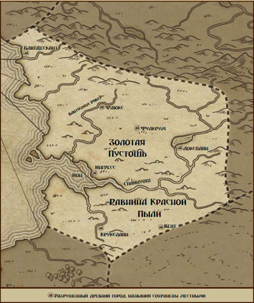
Племенные рейдеры потерянной империи
Золотая Пустошь представляет собой море жёлтой травы и рощи сучковатых деревьев. Жёсткая глинистая земля высасывает дожди в крутые речные русла и оставляет совсем немного для колодцев и озёр. Странные и ужасные звери бродят по степям и закрывают солнце во время своей охоты, но самые свирепые обитатели этой сухой земли – люди, известные как Ревуны.
Ревуны – это бесчисленные кочевые племена, ездящие на странных существах, скитающиеся со своими стадами дающих мясо зверей от одного пастбища к другому в поисках свежих родников и свежей добычи. Они – постоянное бедствие для своих соседей из Лома или Виссио, скачущие по пустошам на свирепых животных, чтобы ограбить ничего не подозревающих путешественников или напасть на плохо охраняемый городок. Они поклоняются духам земли и могучим существам, которые ходят по ней, и презирают чужих богов.
Их предки были великой нацией, связанной с современной Светлой Республикой. Однако вместо чудес техники их теурги были одержимы идеей создания Мандалы, огромного мистического устройства, которое должно было опутать всё государство паутиной оккультной мощи. Здания, дороги и мистические структуры – всё было вплетено в эту великую Мандалу, каждый их дюйм был покрыт символами и магическими письменами.
Никто точно не уверен, что пошло не так, когда Мандала была наконец закончена. Ревуны лишь знают, что города пали, дороги сгорели и только мужчины и женщины, находящиеся в степях, пережили последующий хаос. Животные начали рожать монстров, а ужасные зоны смертельных остатков магии поразили места бывших городов. Выжившие Ревуны приручили наиболее послушных зверей в качестве верховых животных и домашнего скота, и теперь избегают руины как места смерти и несчастья.
Технология Ревунов примитивна, они не обладают многими ресурсами, но являются непревзойдёнными заводчиками и дрессировщиками животных. Они разбросаны по степям бесчисленными маленькими племенами, каждое под обычным управлением мирного вождя и военным лидерством военного вождя. В то время как последний – самый могучий воин племени, первого выбирают за его красноречие, мудрость и способность убеждать.
Ибо как ни примитивны Ревуны, они – превосходные поэты и музыканты. Поскольку записанные слова и содержательные знаки являются для всех Ревунов строгим табу, они полагаются на вокальное искусство. Жилы и странные органы их зверей превращаются в экзотические музыкальные инструменты, а слава их музыки усиливается развлекательными компаниями соседней Светлой Республики, где они романтизируются населением, имеющим удобное море между собой и рейдерскими группами Ревунов. Другие соседи любят их гораздо меньше.
Многие утверждают, что Ревуны – адепты странных сил голоса и песни, и могут управлять животными, очаровывать людей и атаковать врагов силой своего искусства. Безрассудные авантюристы, сталкивающиеся с отрядами Ревунов в попытках добраться до руин их древних предков, иногда узнают правду об этом из первых рук.
Торговля с племенами запрещена в Виссио и Ломе, но купцы и охотники за талантами Светлой Республики обладают условным иммунитетом от племенного мародёрства. Не имея возможностей достичь острова, племена вынуждены менять услуги своих музыкантов и продукты животноводства на безделушки, предлагаемые Республикой. Некоторые прибрежные племена втайне начали разводить морских монстров и летающих животных, которые могут попытаться преодолеть береговую охрану Республики.
Иностранные исследователи веками пытались получить фрагменты Мандалы, но племена настаивают, что эти осколки всё ещё опасны. Любого, кто будет пойман с ними, ожидает медленная смерть от рук Ревунов.
Население: 1 млн.
Проблемы: вражда с Ломом и Виссио; отравленные земли рождают чудовищ; уязвимость к подчинению.
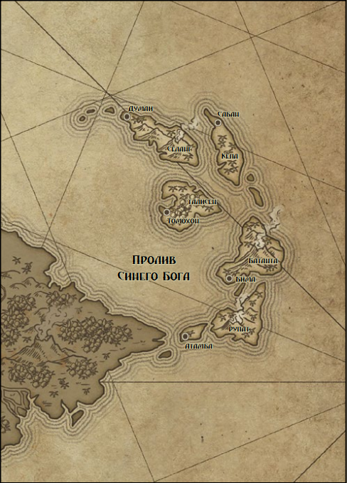
Пираты и торговцы жарких островов
В мире нет кораблей быстрее, чем изящные низкие тендеры Касирутанских островов, почти летящих над водой с парусами, наполненными южными ветрами. Их экипажи полностью состоят из сыновей и дочерей солёной воды, и вряд ли в каком-то из портов мира не видели касирутанского купца, заходящего с полным трюмом сокровищ из далёких краёв. И, тем не менее, старые моряки всегда тревожатся, когда видят яркий парус на горизонте, ибо у касирутан есть ещё и репутация бесстыдно энергичных пиратов и наёмных капёров. К тому времени, когда корабль окажется достаточно близко, чтобы отличить слабо укомплектованного торговца от кишащего разбойниками пирата, обычной жертве уже будет поздно бежать.
Море – наследие касирутан. В далёком прошлом их предки были морскими транспортными силами, доставившими дулумбайское вторжение к южным берегам континента. Не желающие склоняться перед Регентом после хаоса Раскола, эти морские офицеры ушли к Касирутанскому архипелагу, где был хороший морской лес, пенька для верёвок и рыба, чтобы кормить свои экипажи. Со временем они привлекли массу других купцов, бездельников, пиратов и изгнанников, в итоге превратившись в современное сообщество архипелага.
Каждый касирутанский город номинально независим и находится под властью своего датука. Некоторые из этих правителей избираются, а некоторые наследуют свой пост, но никто не задерживается во власти надолго без ублажения богатых купцов и безжалостных пиратских капитанов города. Каждое поколение или два, капитан или купец достигает таких высот славы и успеха, что признаётся раджёй всех островов. Слово раджи – непререкаемый закон, пока ему удаётся сохранять верность островных великих капитанов и купеческих принцев.
Касирутанское общество не столь жёсткое, как можно было подумать исходя из его военного прошлого. На борту касирутанского корабля дисциплина достаточно строга, чтобы удовлетворить патрийского центуриона, но на берегу мужчины или женщины могут делать всё, что пожелают, если у них достаточно золота или стали, чтобы поддержать свои действия. Как подобает государству торговцев, касирутанские законы суровы к мошенникам и нарушителям контрактов, но агрессивные забавы обычно игнорируются. Женщины на островах обладают теми же возможностями, что и мужчины, хотя слабые или глупые женщины получают не больше снисхождения, чем их бездарные братья. В отличие от большинства других государств, женщинам даже позволено работать моряками, хотя на касирутанских кораблях всегда служат или исключительно мужские, или исключительно женские экипажи, чтобы избежать проблем с дисциплиной.
Сам архипелаг густо покрыт джунглями и крутыми вершинами вулканов. Острова дают немного товаров, кроме материалов для кораблей и рыбы, поэтому торговля жизненно важна для выживания городов. Тем не менее, высоко в горах и в глубине джунглей можно найти древние руины, и отважная молодёжь иногда отправляется на поиски странных реликвий первых жителей острова. Их обычаи никому не известны, как и тот факт, были ли они вообще людьми. Существует давняя тревожная легенда, что эти первоначальные обитатели были оборотнями, и их потомки до сих пор втайне живут среди касирутанцев.
Касирутанцы в основном – почитатели предков, однако жрецы Великого Моря оказывают на них существенное влияние из своих покрытых солью островных монастырей и хорошо ухоженных деревенских храмов.
Население: 1 млн.
Проблемы: пираты могут вызвать гнев соседей; мало пригодной земли; гражданские войны между датуками.
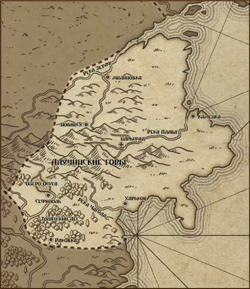
Государство крепостных, мастеров и противоборствующих големов-вельмож
Нездохва – страна холодных равнин, дремучих хвойных лесов и непроходимых гор. Её повелитель – безжалостный Железный Царь, продукт несравненных местных создателей конструктов и безумных амбиций последнего человеческого правителя.
Триста лет назад Нездохва правила рактинскими княжествами до самых границ Дулумбаи и Патрии. Её царь желал более долгой жизни, чем отмерил ему Единый, и потому приказал своим верным мастерам создать для него великолепное тело из металла и колдовства, в котором его мозг мог бы жить вечно. Работа мастеров была так безупречна, что чувство самосознания нового конструкта пересилило жалкие команды мозга старого царя. Он притворялся своим хозяином достаточно долго, чтобы организовать постройку тысяч других автоматонов, после чего в одну ночь перебил старую знать и захватил трон для славного нового правления Железного Царя.
Переворот не был хорошо принят в Рактии, и гордые принцы отказались принести присягу механическому повелителю. Разгневанный конструкт хотел послать свою бессмертную металлическую знать расправиться с дерзкими бунтовщиками, но обнаружил, что эти автоматоны также обладали собственной волей и не желали слепо ему подчиняться. Стало необходимо потакать их желаниям и уравновешивать их власть со своей. С того дня Железный Царь слишком занят управлением раздробленным двором, чтобы выступить против своих бывших подчинённых.
Для большинства оставшихся людей Нездохвы мало что изменилось. Крепостные теперь служат металлическим боярам вместо бояр из плоти, а небрежные издевательства над их жёнами и безбородыми детьми сменились на безжалостную эксплуатацию. Те, кто не платит налоги в серебряных рублях, платят их барщинным трудом в государственных шахтах и на фабриках, где собираются необходимые для обслуживания знати запчасти и предметы для экспорта в другие страны. Мастера и другие образованные люди являются обслуживающим персоналом при домашних хозяйствах бояр, ответственным за улучшение своих хозяев и умножение их величия. Иногда Железный Царь разрешает «семье» создать нового автоматона, чтобы заменить потерянного или в качестве награды за верность, и тогда мастеров призывают для великой работы по его постройке и наполнению.
Бояре в основном человекоподобны по форме, хотя ужасные автоказаки похожи больше на кентавров. Некоторые вызывающе чужеродны, а иные созданы столь искусно, что лишь в их неестественном совершенстве можно разглядеть намёк на механическую природу. Некоторые из этих автоматонов даже были втайне модифицированы, чтобы наслаждаться едой, напитками и более плотскими удовольствиями, хотя подобные вещи считаются в боярских кругах скандальными. Даже самый слабый боярин обладает силой десяти человек и кожей, которую меч едва надеется поцарапать. Одного разгневанного боярина достаточно, чтобы сломать хребет целой деревне восставших крепостных.
Образованные мужчины и женщины из Гильдии Мастеров – самые влиятельные люди Нездохвы. Несмотря на все усилия учёных-автоматонов, методы, которые используются для обслуживания, улучшения и создания механической жизни, требуют человеческих рук. Нужда Железного Царя в мастерах спасла их от повседневного угнетения, от которого страдают крепостные, и многие мастера живут вполне комфортно на службе у своих бояр-повелителей. Им даже позволено покидать страну, в отличие от привязанных к земле крепостных.
Пограничные с Нездохвой государства не доверяют ей, торгуя ради плодов её шахт и фабрик. Они знают, что если Железный Царь когда-нибудь получит полный контроль над своей знатью, армии бояр превратятся в грозную силу покорения.
Население: 60 тыс. автоматонов, 6 млн крепостных.
Проблемы: ненависть крепостных; нападения чудовищ; прогрессивная фракция бояр.
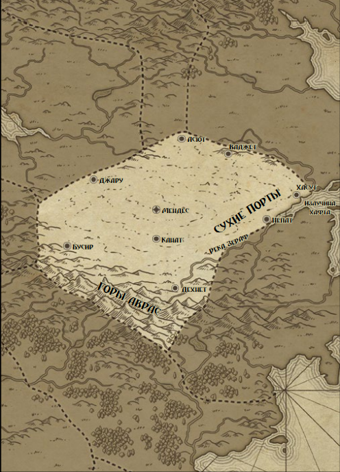
Живущие в пирамидах обитатели пустыни
Гигантские пирамиды Красной Пустыни были воздвигнуты в давно минувшие эпохи, но до сих пор остаются раем для обитателей Государств-Оазисов. Внутри этих гигантских сооружений целые города работают, чтобы возделывать огромные гидропонные сады своих предков, поля, питаемые невообразимо глубокими колодцами в сердце каждой пирамиды. Отражённый солнечный свет и потоки аккуратно направляемой воды используются для выращивания впечатляющего ассортимента лекарств, красителей и продуктов питания для жителей пирамид. Многие из самых ценных специй и экстрактов мира выращиваются в красных стенах городов-пирамид в Оазисах.
Каждое сооружение – автономное сообщество, за исключением их нужды в металлах и других товарах, которая заставляет караваны преодолевать опасности Красной Пустыни. Таким путникам нужно опасаться «песчаных принцев», безжалостных королей бандитов, которые командуют мрачными рядами изгнанных вельмож, беглых рабов, сбежавших преступников и прирождённых мятежников. Эти разбойники знают все секреты глубокой пустыни и используют их, чтобы устраивать засады на караваны и время от времени нападать на плохо охраняемые пирамиды. Из-за налётов ли песчаных принцев или из-за внутренней борьбы, некоторые пирамиды были покинуты. Мудрые люди избегают этих мест, ибо они наполнены смертельными ловушками, беспокойными мертвецами и ужасными чудовищами, выведенными былыми хранителями пирамид.
Правители Государств-Оазисов помешаны на программах евгенического разведения. Среди знати распространены родственные браки, когда лишённые любви пары подбираются исключительно ради развития какой-нибудь магической способности или особого свойства. Результаты впечатляют: семьи их воинов производят солдат и охранников со сверхчеловеческими способностями, а колдуны Оазисов знамениты своей могущественной магией огня и изысканным искусством формирования плоти. Конечно, многие из этих эталонов также страдают от разрушительных психических или физических недугов из-за длительного инбридинга, но старейшины согласны, что это цена, которую нужно заплатить за преимущества.
Активнее всего практикует эти традиции сама королевская семья. Их династия поддерживалась родственными браками в течение более семисот лет, когда наиболее магически-одарённых детей одного поколения сводили вместе для следующего. Нынешние Богиня-Королева Ташерит и Бог-Король Хаю обладают неземной красотой, высочайшими теургическими способностями и впечатляющей психической нестабильностью. Целая прослойка благородных чиновников существует только для того, чтобы следить за тем, что безумие божественных монархов не навредит государству, хотя время от времени отдельные невменяемые требования приходится выполнять, дабы не навлекать ужасные кары правителей на свой народ.
Люди Государств-Оазисов изначально были смесью народов Дин и Акех, но за прошедшие века среди них появилось огромное разнообразие различных лиц, оттенков и форм. В результате евгенических программ и инцеста где-нибудь внутри пирамид можно встретить практически любые вообразимые варианты человечества.
Основной религией в Государствах-Оазисах является разновидность поклонения предкам вкупе с почитанием Богини-Королевы и Бога-Короля. Однако глубоко в коридорах пирамид могут расцветать более тёмные и странные верования. Ходят слухи, что некоторые благородные семьи хотят вырастить божество из своей династии, и что злосчастные неудачи этих усилий устраивают логова в давно покинутых подземных тоннелях.
Население: 3 млн, 3% – рейдеры.
Проблемы: агрессивные песчаные принцы; нестабильные отпрыски знати; народ терпит, но не любит властителей.
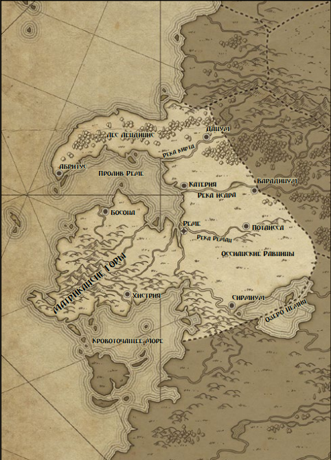
Военизированное государство, зависящее от тяжёлой пехоты и рабства
Патрийская Империя – суровая страна жёстких законов и непоколебимой решимости. Их бронированные легионы тысячу лет сдерживали огромное Дулумбайское Регентство, одинаково сохраняя бдительность и во время беспокойного мира, и в дни открытой войны. Огромные толпы рабов гнут спины глубоко в имперских шахтах и выращивают посевы на широких полях латифундий, а их работа кормит граждан и вооружает солдат, защищающих землю. И всё же патрийцы воевали так долго, что каждый аспект их культуры оказался затронут мечом.
Каждый патрийский гражданин мужского пола призывается в легионы в свой шестнадцатый день рождения, и служит двенадцать лет. Лучших из них вербуют в несравненные легионы тяжёлой пехоты, вооружённые сияющей стальной бронёй, раскрашенными щитами и бритвенно-острыми ассагаями. Не столь многообещающие патрийцы назначаются в легионы поддержки, чтобы заниматься военной логистикой или надзирать за огромным числом рабов, питающих патрийское производство. Хотя женщин обычно не призывают, решительным гражданкам позволено присоединиться к исключительно женским легионам и заслужить гражданские права своих братьев.
Патрийские рабы в основном состоят из дулумбайских военнопленных и их потомков, хотя патрийцы и прочие, совершившие преступление, которое не совсем заслуживает смерти, могут обнаружить себя в цепях. Такие мужчины и женщины встречаются на всех уровнях общества, от доверенных агентов самого Императора, до бедных оборванцев, которые проживают свои короткие жизни во тьме патрийских шахт. Все граждане, кроме самых бедных семей, имеют хотя бы одного раба. Добросовестные рабы могут надеяться на освобождение от рабства своими хозяевами в качестве награды за верную службу. Многие семьи гораздо охотнее пользуются услугами проверенных вольноотпущенников из своего хозяйства, чем ненадёжных незнакомцев.
Патрийцы много говорят о преданности и удовлетворённости своих рабов, и для некоторых из них это, несомненно, правда. Однако у ожесточённых масс в шахтах и на полях есть только страх, ненависть и бдительность их охранников. Восстания рабов обожгли не один патрийский квартал.
Помимо лучшей тяжёлой пехоты в мире, патрийцы также известны качеством и богатством своей архитектуры. Их самые маленькие города окружены такими же качественными стенами, как замки в менее способных государствах, а их акведуки, канализации и высокие здания вызывают зависть соседей. Опытные патрийские инженеры могут даже воспроизводить некоторые строительные трюки Светлой Республики с помощью своего мастерства, и жилища богачей располагают горячей и холодной водой, а также прекрасным водоотведением.
Патрийцы – относительно преданные последователи Церкви Единого, хотя некоторые подозревают, что главным образом это вызвано желанием противопоставить свою веру почитателям предков из Дулумбаи. В отличие от некоторых других государств, местное духовенство Единого лояльно относится к идее рабства. Циничные вольноотпущенники зачастую пользуются церковью в качестве пути к статусу и влиянию.
Большинство патрийцев происходит из народа Акех, темнокожего и темноглазого, и предпочитает окрашенные в сочные цвета «великие робы» своих предков при исполнении общественного долга. Сенатор, появившийся без неё и своего плаща из леопардовой шкуры, будет неподобающе одет для выполнения своих должностных обязанностей. Рабочие и люди на отдыхе предпочитают туники и штаны для обоих полов, возможно с накидкой в случае состоятельных женщин.
Население: 10 млн, 30% рабы.
Проблемы: вечная война с Дулумбаи; угроза восстания рабов; легионы могут свергнуть правителя.
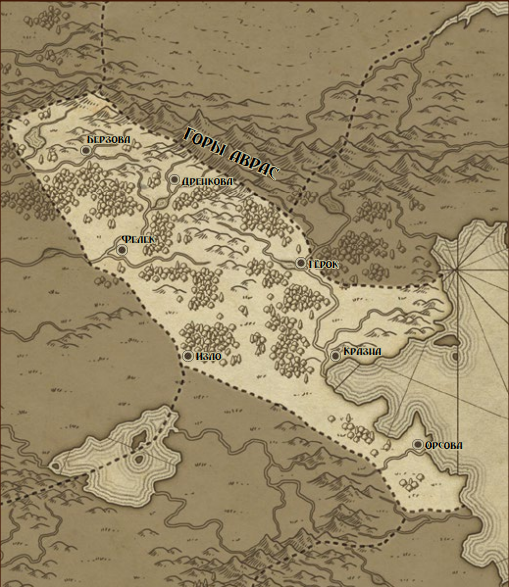
Лоскутное одеяло городов-государств и сельских территорий
Рактинская Конфедерация – нестройное лоскутное одеяло городов-государств, сельских владений и безлюдных лесов под властью спутанной массы домнов, банов, бояр, воевод и князей, каждый из которых терпеть не может своих соседей. Земля эта дикая и труднопроходимая, с вездесущими лесами и зазубренными горными пиками, вздымающимися среди холмов.
Сорок лет назад это была павшая духом страна, поделённая между Патрийской Империей и Дулумбайским Регентством, всего лишь ещё один кусок покорённой земли, за который боролись две великие империи. Так продолжалось многие десятилетия, поколения рактинских мужчин и женщин становились патрийскими рабами и дулумбайскими сяоренами, а их древесина и посевы забирались в качестве дани. Рактинцы всегда первыми чувствовали последствия катастроф и давление военной необходимости, и народ отчаянно жаждал свободы.
Глубоко в горах мудрецы и учёные открыли древние хранилища и искали запретные знания. Там, в спрятанных в горных пиках Чёрных Академиях, они призвали силы Несотворённой Ночи, чтобы сбросить власть тиранов и изгнать иноземцев из Рактии. Они добились успеха, хотя и ужасной ценой.
Демоны и чудовища, вышедшие из Несотворённой Ночи, обратили дулумбайцев и патрийцев в бегство, но также прокатились кровавым катком и по простому народу. Некоторые рактинские города были уничтожены, а участки земли стали непригодными для жизни из-за нашествия ужасных чудовищ. Тем не менее, часть рактинцев взяла на себя роль охотников на монстров, и за прошедшие сорок лет они отогнали большинство чудовищ и восстановили подобие цивилизации в тёмных долинах Рактии. Однако леса по-прежнему опасны и жители деревень не выходят наружу по ночам и не смеют путешествовать по дорогам в одиночку.
Волшебников, которые призвали этих чудовищных существ, боятся и уважают, хотя немногие из них пережили свои деяния. Большинство продолжает скрываться в Чёрных Академиях, изучая тёмные знания, вербуя достойных учеников из числа амбициозных и безрассудных. Большинство академий ненавидит друг друга, и между ними на низком уровне постоянно продолжается колдовская война, чтобы определить, кто должен быть первейшими колдунами Рактии.
В основном волшебники Чёрных Академий фокусируются на призыве сил Несотворённой Ночи, их подчинении и использовании против соперников и врагов. Время от времени кто-то из этих великих колдунов соглашается помочь какому-нибудь вельможе, но, как правило, за высокую цену в виде подопытных людей для своих экспериментов или большой суммы золота для финансирования своих исследований.
Знать Рактии старается не замечать колдунов, насколько это возможно, хотя мириады магических опасностей здешних земель гарантируют, что у каждого вельможи для определения магических проблем имеется как минимум один придворный волшебник, нанятый из какой-то низкой школы магии, которые усеивают страну. Даже маленькие деревни часто полагаются на мудрость уличного мага для распознания магических неприятностей и нахождения существующих проклятий. Иногда во зле обвиняют и самих уличных магов, и тогда им приходится спасаться бегством, чтобы не быть сожжёнными заживо.
Большинство настоящей работы по умерщвлению чудовищ выполняют Пожиратели Проклятий, сообщество охотников на монстров и борцов с проклятиями, условно организованное в систему мастеров и учеников. Пожирателей Проклятий боятся и уважают, и практически в любой деревне Рактии они могут найти оплачиваемую работу. Они также обладают привилегией забирать крестьян у господ, либо в качестве временной помощи в охоте на чудовищ, либо как постоянных учеников. Добровольцев из числа горячей молодёжи практически всегда хватает, однако согласие рекрута, в общем-то, не требуется.
Население: 5 млн, не более 5% в городах.
Проблемы: постоянные междоусобицы знати; Дулумбаи и Патрия ждут своего часа; налёты из Нездохвы.
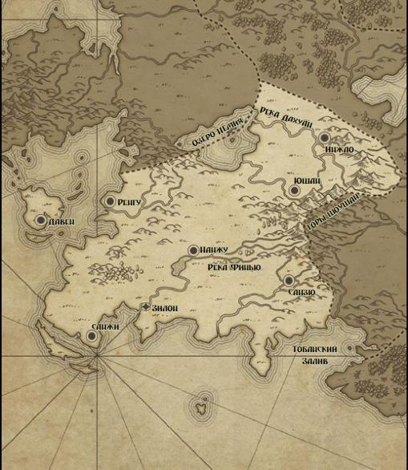
Авангард древнего вторжения, гордящееся эрудицией и искусством
Золотые Дулумбаи – вторая из великих южных держав, государство, основанное в качестве плацдарма вторжения тысячу лет назад, незадолго до Раскола. Далёкая Срединная Империя отправила бесчисленный флот, чтобы захватить континент для своего императора. Дулумбаи были первой захваченной землёй, а их патрийское население бежало на север или было порабощено. Даже сегодня многие дулумбайские семьи имеют существенную примесь патрийской крови.
Когда всего лишь несколько лет спустя произошёл Раскол, захватчики были вынуждены полагаться на собственную инициативу, и выбрали из числа своих военных лидеров регента. За прошедшую тысячу лет возникли и угасли несколько вице-королевских династий, но их потомки по-прежнему подчиняются мифу о верности давно потерянному императору.
Дулумбаи – богатая и развитая страна, одарённая плодородными рисовыми чеками и хорошими пастбищами на северо-востоке. Иерархическая природа первоначальных сил вторжения по-прежнему проявляется в крайне низком статусе обычных простолюдинов. Эти сяорены, в основном неотличимые от рабов, которых некоторые из них держат, находятся под властью районных магистратов и платят огромные налоги, чтобы поддерживать бесконечные враждебные действия против соседней Патрийской Империи.
Единственная надежда дулумбайского сяорена – успех сына или дочери на Великих Экзаменах, ежегодных соревнованиях, призванных испытать военные и культурные знания кандидата. Прекрасно понимая свою отдалённость от материнского государства, дулумбайцы неистово поддерживают уклад и эстетику своих предков. Совершенное знание их древних книг, поэзии, музыки и юриспруденции – отличительная черта джунзи, местного аристократического класса. Неудачники, которые не могут освоить кисточку для письма, могут вместо этого доказать свою доблесть в боевых искусствах, однако мастерство владения мечом считается значительно более низким, чем мастерство в тонкостях каллиграфии.
Джунзи формируют класс учёных и чиновников Дулумбаи, управляя мириадами служб и рабочих мест, необходимых для поддержания функционирования Регентства. Отпрыскам джунзи не даётся никаких поблажек на Великих Экзаменах, так что на них постоянно давит необходимость проявить себя с лучшей стороны. Те, кто добьётся на экзаменах наибольшего успеха, могут рассчитывать на важный официальный пост. Минимальный успех даёт возможность рассчитывать на скромное, но прибыльное место, в то время как многие из провалившихся получают в лучшем случае вспомогательные роли и вынужденны исполнять решения более успешных чиновников. Некоторые богатые кандидаты используют щедрые суммы золота, чтобы избежать такой судьбы.
Дулумбайцам свойственен сильный культурный консерватизм, они с неохотой принимают любые изменения, угрожающие их возлюбленным традициям. Некоторые говорят, что патовая ситуация на патрийских границах продолжается так долго, потому что Дулумбаи не столько хотят выиграть войну, сколько сохранить свою национальную традицию. Джунзи считают все остальные государства одинаково варварскими и строго отвергают любое заимствование чужих укладов или обычаев, как потенциально разлагающее свою культуру.
Однако это не мешает Дулумбаи торговать с Виссио и Светлой Республикой, пусть и под маской «дани» Регенту и «даров» другим государствам. Дулумбайские сяорены дисциплинированы и трудолюбивы, и плоды их ферм и шахт покупают предметы роскоши для джунзи и вооружение для войны с Патрией. Иностранные студенты также посещают дулумбайские университеты, чтобы впитать знаменитую мудрость дулумбайских учёных и поэтов.
Дулумбайцев можно встретить в отдалённых землях, в основном семьи сяоренов, бежавшие от малообещающей жизни, чтобы начать новую в другом месте. Такие изгнанники испытывают в отношении своего бывшего дома в лучшем случае смешанные чувства.
Население: 16 млн, 5% джунзи, 10% рабы.
Проблемы: неопределённость в отношении Обожествлённых; война с Патрией; назревающее восстание сяоренов.
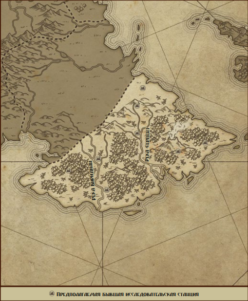
Земля, в которой свирепствуют божества, а племена используют древнюю теотехническую магию
Во времена до Раскола земля, известная как Тысяча Богов, была всего лишь малонаселённым полигоном для эзотерических теотехнологий и экспериментальной теургии. Помимо нескольких видавших виды сообществ лесорубов и трапперов обитателей в этих густых джунглях было немного. Ползучие болезни и опасные звери не добавляли желания селиться дальше побережья.
Такая изоляция способствовала тому, что несколько государств основали защищённые испытательные полигоны в джунглях, где магией можно было свободно пользоваться без сторонних наблюдателей. Было раскрыто множество тайн, впоследствии ставших частью Сотворённых Богов и их искусственной божественности. Но когда, наконец, наступил Раскол, отчаявшиеся исследователи были вынуждены полагаться только на свою магию, чтобы пережить последовавший хаос.
Их решением было напитать некоторых членов собственных групп божественной энергией, слепив из них импровизированные божества, которые, возможно, смогли бы спасти своих товарищей-исследователей. Многие добились успеха, но созданные ими боги были искривлёнными, несбалансированными существами, больше паразитными богами, чем спокойными божествами. Эти боги спасли исследовательские станции и защитили своих бывших коллег от последовавших катастроф, но их психическая стабильность всегда оставляла желать лучшего. Состояние многих за прошедшие столетия ухудшилось, и они стали всё более зациклены на получении всё большего влияния и всё более роскошных храмов.
После Раскола последовал приток беженцев из соседних стран, ищущих помощи у «Тысячи Богов». Вокруг каждого бывшего исследовательского центра сформировались большие культы, и местные боги неизбежно занялись тем же ожесточённым противостоянием, которое со временем поглотило Сотворённых Богов. Каждое племя исследователей было стравлено с другими их божествами-покровителями, и любое нежелание служить каралось смертью или чем-то хуже.
С тех пор Тысяча Богов стали опасной мешаниной королевств в джунглях и племенных территорий, враждующих так же часто, как и нехотя сотрудничающих против более сильных противников. Шаманы и жрецы Тысячи Богов владеют огромными запасами теотехнических знаний и по-прежнему сохраняют секреты создания божеств, утраченные во всём остальном мире, но вынуждены использовать эти знания на службе у своих ревнивых покровителей. Каждый год боги требуют всё больше и больше верующих, и всё большие и большие жертвоприношения. Несмотря на это, некоторые божества погибли, когда племенным убийцам богов или соперничающим исследовательским центрам удалось сразить их.
Жизнь в исследовательских центрах представляет собой смесь жалкой нищеты и небрежных чудес. Тысяча Богов считает пустяком призывы чудес для поддержки своих людей, но сами джунгли суровы и скупы. Божественное изобилие отправляется в торговые деревни на берегу для обмена с касирутанскими купцами на товары и жертвенные предметы из других стран. Время от времени на берег высаживается группа авантюристов в надежде найти древние сокровища в разрушенных исследовательских центрах или племенных храмах. Кто-то ищет тайны создания богов, хранимые шаманами, хотя цена за такое знание крайне высока.
Не все мужчины и женщины Тысячи Богов подчиняются этим божественным тиранам. У некоторых хватает смелости или удачи бежать из своих сообществ и искать убежища в глубине джунглей, где группы воинов-Безбожников ведут трудную жизнь без помощи божественных покровителей. Однако свобода для этих людей вполне стоит голода и болезней, и они обладают особыми техниками убийства богов, способными ошеломить даже ломитского антижреца. Завоевать их доверие нелегко, и чтобы убедить их поделиться своими тайнами с чужаками, требуется больше, чем простое материальное вознаграждение.
Население: около 1 млн.
Проблемы: боги становятся всё более деспотичными; лёгкая добыча для работорговцев; Безбожники враждебны ко всем.
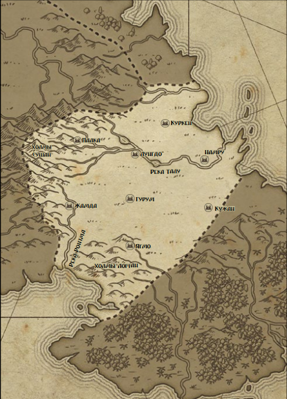
Гордые всадники, служащие святым монахам монастырей
Тобанский народ – родственники дулумбайцев, ибо их предки были лёгкой кавалерией, посланной на борту флота вторжения и высадившейся на южных берегах незадолго до Раскола. Переливающиеся пастбища равнин Тоба были подходящей землёй для всадников, и вскоре они истребили или ассимилировали местные народности Дин и сформировали собственное государство к востоку от Дулумбаи. Их несравненные конные лучники по-прежнему сражаются за регента, но делают это ради звонкой монеты, а не верности. Ка-Хан по-прежнему посылает Регенту в Дулумбаи символическую дань, но все знают, что это лишь вежливая дипломатическая фикция.
Тобанцы ведут два образа жизни. Большинство из них – кочующие скотоводы, ведущие своих лошадей и стада по великим равнинам и живущие в войлочных юртах. Традиции отвели каждому тобанскому клану определённый участок для своих пастбищ, но неприкосновенность этого участка во многом зависит от силы клана. Воровство лошадей и скота широко распространено среди молодых тобанских воинов, демонстрирующих таким образом свою храбрость и хитрость.
Меньшая часть живёт в огромных ламаистских монастырях, гигантских сооружениях, построенных из местного камня и доставленной из земель Тысячи Богов древесины. Эти храмы посвящены предкам тобанцев, а также головокружительному множеству демонов-хранителей и опекающих божеств. Постоянно проводятся сложные ритуалы, чтобы защитить земли Тоба от Тысячи Богов на юго-востоке, и придать тобанцам силу против магических опасностей, зарождающихся в тех непролазных джунглях.
Однако такие монастыри являются больше торговыми городами, чем святыми местами, и большая часть стационарной промышленности и ремесла равнин располагается за циклопическими стенами. Многие из тамошних лам и монахинь – скорее ремесленники, чем духовенство, значительная их часть может вспомнить лишь несколько простейших зазубренных молитв. Тем не менее, они очень почитаемы среди своих странствующих сородичей, а более высокопоставленные члены монастырей могут рассчитывать на королевский приём у хана любого клана.
Между собой, однако, у монастырей отношения менее тёплые. Старые теологические диспуты, споры о назначении традиционных подношений от кланов, прямые военные действия между враждующими монастырями оставили большинство из них в натянутых отношениях друг с другом. Некоторые даже были разрушены, либо силами соперничающего монастыря, или некой магической катастрофой, вызванной безрассудным колдовством или вражеским проклятием. Тобанцы бояться ходить в эти места, но чужаки более заинтересованы в оставшейся там добыче.
В настоящее время величайшим монастырём равнин считается Палкья, где облачённые в алые робы монахи секты Сантука служат Палкья Ламе и десяти тысячам божественных предков, почитаемых в этих стенах. Палкья Лама – могущественный колдун, но он – плохой человек, и даже его монахи боятся его больше, чем любят. Ходят слухи, что он предпочёл бы, чтобы тобанцами правил праведник, а не Ка-Хан, и некоторые люди сомневаются, какого праведника он имеет в виду.
Кочевники Тоба одеваются, как подобает тем, кто рождён для седла: и женщины, и мужчины предпочитают крепкие кожаные штаны с лёгкими рубахами. Монахи и монахини носят робы, обычно окрашенные в характерные для своего монастыря цвета или узоры. Каждый кочевник должен уметь пользоваться луком, будь то мужчина или женщина, и ни один из них никогда не взбирается на лошадь, не имея под рукой лука и колчана.
Население: 3 млн, 10% в монастырях.
Проблемы: борьба монастырей за влияние; междоусобные налёты; магические чудовища из Тысячи Богов.
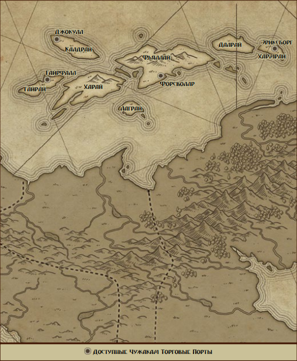
Ведьмы-викинги, порабощающие мёртвых
По всем северным берегам от Анкалии до Лома испуганные глаза вглядываются вдаль, следя за появлением ужасных чёрных кораблей ульстангцев. Мрачные бледные воины островов плывут на кораблях, управляемых мертвецами, с носами, освещёнными фонарями их королев-ведьм, и экипажами, жадными до добычи. Им недостаточно просто забрать имущество тех, кого они убивают, они также забирают с собой трупы жертв, которым суждено служить в качестве неупокоенных рабов и рабынь.
Ульстангцы – дикий народ, поддерживающий своё безрадостное существование на холодных островах колдовством и жестоким пиратством. Ими правят безжалостные королевы-ведьмы, каждый остров – владение холодной повелительницы некромантии. Мужчинам запрещено изучать их тайны, вместо этого их отправляют грабить берега и умирать в бою. Тем, кто погибает достойно, позволяется тихая могила, в то время как тех, кто умер в постели или с позором, воскрешают для работы на своих потомков.
Большая часть работы на рифах выполняется драуграми, ходячими мертвецами, которыми управляют королевы-ведьмы и их жрицы. Холодные наложницы сидят неподвижно, в то время как отмеченные войной рабочие рубят дерево и обрабатывают бедные поля. Чтобы задержать разложение, драугров держат в холоде, хотя из-за краткой тёплой погоды северного лета несколько из них неизбежно прогнивают до непригодности, вынуждая доставлять домой новую партию трупов. Драугры – старшие неупокоенные и не являются полностью безмозглыми; большинство из них сохраняет часть агонизирующего сознания и памяти, и может выполнять простые задания под надзором усльтангских погонщиков рабов. Некоторые даже годятся для сражений и часто заковываются в тяжёлую броню и вооружаются массивным оружием, чтобы воспользоваться преимуществом их сверхъестественной силы.
Королевы-ведьмы измеряют свой статус количеством драугров и живых под своим командованием, а также богатств в своих холодных дворцах. Они не любят друг друга, но их великие ритуалы некромантии требуют сотрудничества нескольких адептов, так что они не могут себе позволить сокрушить всех потенциальных узурпаторов. Вместо этого они сражаются с помощью предательства, обмана и подстроенных слугам друг друга злоключений. Каждая ульстангская девочка мечтает быть призванной на службу королеве-ведьме, хотя лишь немногие из призванных живут достаточно долго, чтобы подсидеть свою бессмертную госпожу.
Большинство ульстангцев не знает ничего, кроме своей мрачной жизни на рифах, но некоторых втайне влекут другие идеи. Не каждого раба убивают, прежде чем доставить обратно на рифы, и некоторые из них наполняют головы впечатлительных ульстангцев образами тёплых и лучших земель. Для того чтобы сбежать от ревностного правления королев-ведьм или ускользнуть из рейдерской экспедиции требуется храбрость, но храбрость, в отличие от милосердия, никогда не была для ульстангцев чем-то непривычным.
В разное время многие государства подумывали напасть на рифы, но объединённые королевы-ведьмы и их черноносые корабли неизбежно разбили бы любое обычное вторжение. Только действиями нескольких государств совместно с какой-то великой морской силой можно рассчитывать очистить рифы от ульстангцев. Пока что жители материка терпят бесчинства пиратов и их благословлённые колдовством налёты как неизбежное зло.
Ульстангцы предпочитают меха и кожу или украденные наряды, сидя в своих холодных банкетных залах. Драугры носят лохмотья, и то не всегда. Живые предпочитают благовония и духи, чтобы заглушить вонь своих мёртвых слуг, при этом и мужчины, и женщины очень требовательны к своему внешнему виду. Изыскано заплетённые бороды и женские волосы, уложенные в локоны и косицы, являются признаками того, что носящее их тело по-прежнему находится среди живых.
Население: 1 млн живых, 4 млн драугров.
Проблемы: все соседи ненавидят ульстангцев; одна из ведьм заключила сделку с безымянными существами; хозяйство полностью зависит от драугров.
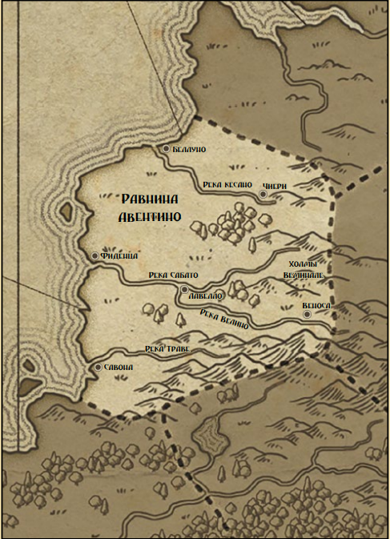
Бывшие патрийские колонии, ставшие независимыми городами-государствами купцов, художников, отравителей и поэтов
Виссио – это небольшое государство к северу от Патрии, чьё местное население давным-давно было поглощено древним патрийским нашествием. Жёсткая суровость юга была смягчена этой ассимиляцией, и отличная защищённость виссийских городов вскоре сделала северные колонии полностью независимыми от императора в Патрии. Генералы юга заикаются о возвращении «восставших провинций» примерно раз в поколение, но война против Дулумбаи отнимает все силы империи.
Некоторые подозревают, что император не особо стремится посылать легионы на север. Торговцы Виссио путешествуют далеко и ведут дела со всеми остальными государствами континента, перевозя изделия из Светлой Республики, товары из Патрии и Дулумбаи, и редкости со всего света. Они сохраняют торговый нейтралитет во времена войн, так что враждующие силы зачастую находят Виссио полезным нейтральным торговым партнёром или источником наёмников.
Виссийцы гордятся своей ролью купцов, но ещё больше они гордятся своей культурой, музыкой и скульптурой. Виссийские поэты и музыканты знамениты на половине мира, даже если столь же надменные гранды Дулумбаи презрительно фыркают на «варварский шум». Скульптуры, вырезанные из белого мрамора их холмов, желаемы каждым богатым патрицием на западе, а их унаследованные патрийские навыки в архитектуре были смягчены любовью к прекрасным орнаментам и богатой отделке.
Такие украшения, однако, не идут в ущерб обороноспособности, и всем известно, что виссийские города на холмах прекрасно укреплены. Подобная защищённость привела к векам предательства, заговоров и заказных убийств среди лидеров городов-государств, каждый из которых надеялся, что ножи во тьме и золото под столом добьются того, что не удаётся солдатам в поле. Виссийцы печально известны своим политическим прагматизмом и способностью к безжалостности, вместе со страстью к личному совершенству и творческой изысканностью.
Одним из старейших инструментов виссийской политики является тайная организация учёных-убийц, известная как Орден Редакторов, или в просторечье «Бритвы Бога». Потомки древней группы университетских магистров, посвятивших себя вырезанию нежелательных людей из мира, Бритвы пришли в упадок, разделившись на фракцию идеалистов, которые стремятся улучшить мир через направленные убийства, и более прагматичную группу, которая принимает контракты по рыночной цене. Бритвы, как правило, действуют в пределах границ Виссио, хотя с помощью достаточного количества золота или ради интересного задания их иногда можно выманить наружу.
И Бритвы, и богатая знать активно пользуются преимуществами необычных механических протезов, которые создают виссийские маэстро. Такие протезы замещают отсутствующую часть тела или незаметно имплантируются под кожу, совершая для пользователя чудеса. В отличие от имплантов Светлой Республики, эти протезы работают повсюду в мире, но слишком дороги, и позволить себе их могут только элиты или те, кто располагает особыми связями с маэстро-затворниками.
Мужчины и женщины Виссио предпочитают роскошные одеяния из дулумбайских шёлков и пышной парчи, с укороченными туниками, цветными чулками и экстравагантными шляпами. Работающие простолюдины полагаются на более практичную одежду, но сохраняют любовь к цветам.
Население: 6 млн.
Проблемы: торговые войны между городами; Бритвы берут любой контракт; культурное давление Светлой Республики.
Народы мира
Основные этнические группы: Акех (юго-запад, темнокожие), Дин (центральные регионы, бледнокожие) и Рен (юг, бронзовая кожа, прямые чёрные волосы). За тысячу лет произошло сильное смешение. Встречаются потомки древней магии с нечеловеческими чертами.
Языки
Большинство современных языков происходят от трёх древних. Существует торговый жаргон. В таблице ниже перечислены основные носители.
| Язык | Носители |
|---|---|
| Классический ренский | Дулумбайские чиновники, учёные |
| Современный ренский | Дулумбаи, Равнины Тоба, рабы в Патрии |
| Солёный ренский | Касирутанский Архипелаг |
| Старый динский | Учёные и историки |
| Стагнир | Ульстангские Рифы, Лом |
| Пелагик | Светлая Республика, Ревуны |
| Молвь | Нездохва, Рактия |
| Древний акехский | Учёные и историки |
| Патрийский | Патрийская Империя, Виссио, рабы в Дулумбаи |
| Керез | Анкалия и её рыцарские ордены |
| Менет | Государства-Оазисы и песчаные принцы |
| Торговый жаргон | Купцы, торговцы, путешественники |
| Святая речь | Местные из Тысячи Богов |
| Изначальный | Ангелы и теурги |